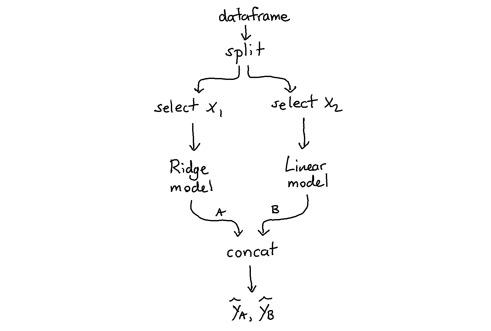

Preprocessing¶
There are many preprocessors in scikit-lego and in this document we would like to highlight a few such that you might be inspired to use pipelines a little bit more flexibly.
Estimators as Transformers¶
Sometimes you'd like the output of a model to be available as a feature that you might use as input for another model. The issue here is that scikit learn pipelines usually only allow a single model at the end of a pipeline.
One solution to this problem is to turn the model into a transformer. To convert a model to become a transformer you can use the EstimatorTransformer from the meta module.
Example 1¶
Let's demonstrate one example. Below we describe how to create a pipeline with two models that each see the same dataset. Note that the output of this pipeline is still only a transformer pipeline.

import numpy as np
import pandas as pd
from sklearn.pipeline import FeatureUnion, Pipeline
from sklearn.linear_model import LinearRegression, Ridge
from sklego.meta import EstimatorTransformer
from sklego.preprocessing import ColumnSelector
np.random.seed(42)
n = 1000
X = np.random.uniform(0, 1, (n, 2))
y = X.sum(axis=1) + np.random.uniform(0, 1, (n,))
df = pd.DataFrame({"x1": X[:, 0], "x2": X[:, 1], "y": y})
pipeline = Pipeline([
("grab_columns", ColumnSelector(["x1", "x2"])),
("ml_features", FeatureUnion([
("model_1", EstimatorTransformer(LinearRegression())),
("model_2", EstimatorTransformer(Ridge()))
]))
])
pipeline.fit(df, y).transform(df)
array([[1.84239085, 1.8381264 ],
[1.84487058, 1.84095898],
[0.78867225, 0.79690879],
...,
[1.92562838, 1.92076151],
[1.52504886, 1.52524312],
[0.81791076, 0.82568794]])
Example 2¶
Here's another example that works a little bit differently. Here we have two models that each see different data.

pipeline = Pipeline([
("grab_columns", ColumnSelector(["x1", "x2"])),
("ml_features", FeatureUnion([
("p1", Pipeline([
("grab1", ColumnSelector(["x1"])),
("mod1", EstimatorTransformer(LinearRegression()))
])),
("p2", Pipeline([
("grab2", ColumnSelector(["x2"])),
("mod2", EstimatorTransformer(LinearRegression()))
]))
]))
])
pipeline.fit(df, y).transform(df)
array([[1.3810049 , 1.96265338],
[1.75182446, 1.5942067 ],
[1.15431258, 1.13093337],
...,
[1.7719303 , 1.65521752],
[1.98484405, 1.03984466],
[1.05164825, 1.26300114]])
Concatenating Pipelines¶
Transformers in scikit-learn typically do not add features. They replace them. Take PCA for example.

The new dataset that comes out \(X^{\text{new}}\) would no longer have columns \({x_1,...,x_4}\) but would instead replace them with \({x_{\text{PCA}_1}, x_{\text{PCA}_2}}\).
If we rethink the pipeline a little bit we might not have to loose the original data.

If you don't want to loose data, you can make use of a FeatureUnion and a IdentityTransformer.
import numpy as np
from sklearn.pipeline import FeatureUnion, Pipeline
from sklearn.decomposition import PCA
from sklego.preprocessing import IdentityTransformer
np.random.seed(42)
n = 100
X = np.random.uniform(0, 1, (n, 4))
pipeline = Pipeline([
("split", FeatureUnion([
("orig", IdentityTransformer()),
("pca", PCA(2)),
]))
])
X_new = pipeline.fit_transform(X)
You can check below that this pipeline will concatenate features without replacing them.
array([[ 0.3745, 0.9507, 0.732 , 0.5987, 0.4888, -0.0206],
[ 0.156 , 0.156 , 0.0581, 0.8662, -0.1584, 0.4143],
[ 0.6011, 0.7081, 0.0206, 0.9699, 0.1228, -0.1769]])
array([[0.3745, 0.9507, 0.732 , 0.5987],
[0.156 , 0.156 , 0.0581, 0.8662],
[0.6011, 0.7081, 0.0206, 0.9699]])
Column Capping¶
Some models are great at interpolation but less good at extrapolation.
One way to potentially circumvent this problem is by capping extreme values that occur in the dataset \(X\).

Let's demonstrate how ColumnCapper works in a few examples below.
import numpy as np
from sklego.preprocessing import ColumnCapper
np.random.seed(42)
X = np.random.uniform(0, 1, (100000, 2))
cc = ColumnCapper()
output = cc.fit(X).transform(X)
print(f"min capped at 5th quantile: {output.min(axis=0)}")
print(f"max capped at 95th quantile: {output.max(axis=0)}")
cc = ColumnCapper(quantile_range=(10, 90))
output = cc.fit(X).transform(X)
print(f"min capped at 10th quantile: {output.min(axis=0)}")
print(f"max capped at 90th quantile: {output.max(axis=0)}")
# min capped at 5th quantile: [0.05120598 0.0502972 ]
# max capped at 95th quantile: [0.94966328 0.94964339]
# min capped at 10th quantile: [0.10029693 0.09934085]
# max capped at 90th quantile: [0.90020412 0.89859006]
Warning
Note that the `ColumnCapper`` does not deal with missing values but it does support pandas dataframes as well as infinite values.
Patsy Formulas¶
If you're used to the statistical programming language R you might have seen a formula object before. This is an object that represents a shorthand way to design variables used in a statistical model.
The patsy python project took this idea and made it available for python. From sklego we've made a wrapper, called PatsyTransformer, such that you can also use these in your pipelines.
import pandas as pd
from sklego.preprocessing import PatsyTransformer
df = pd.DataFrame({
"a": [1, 2, 3, 4, 5],
"b": ["yes", "yes", "no", "maybe", "yes"],
"y": [2, 2, 4, 4, 6]
})
X, y = df[["a", "b"]], df[["y"]].to_numpy()
pt = PatsyTransformer("a + np.log(a) + b")
pt.fit(X, y).transform(X)
DesignMatrix with shape (5, 5)
Intercept b[T.no] b[T.yes] a np.log(a)
1 0 1 1 0.00000
1 0 1 2 0.69315
1 1 0 3 1.09861
1 0 0 4 1.38629
1 0 1 5 1.60944
Terms:
'Intercept' (column 0)
'b' (columns 1:3)
'a' (column 3)
'np.log(a)' (column 4)
You might notice that the first column contains the constant array equal to one. You might also expect 3 dummy variable columns instead of 2.
This is because the design matrix from patsy attempts to keep the columns in the matrix linearly independent of each other.
If this is not something you'd want to create you can choose to omit it by indicating "-1" in the formula.
DesignMatrix with shape (5, 5)
b[maybe] b[no] b[yes] a np.log(a)
0 0 1 1 0.00000
0 0 1 2 0.69315
0 1 0 3 1.09861
1 0 0 4 1.38629
0 0 1 5 1.60944
Terms:
'b' (columns 0:3)
'a' (column 3)
'np.log(a)' (column 4)
You'll notice that now the constant array is gone and it is replaced with a dummy array. Again this is now possible because patsy wants to guarantee that each column in this matrix is linearly independent of each other.
The formula syntax is pretty powerful, if you'd like to learn we refer you to formulas documentation.
Repeating Basis Function Transformer¶
Some variables are of a circular nature. For example, the days of the year, 1-Jan-2019 (day 1) is just as close to 2-Jan-2019 (day 2) as it is to 31-Dec-2018 (day 365).
If you would encode day of year numerically you would lose this information, as 1 close 2 to but far from 365. The RepeatingBasisFunction transformer can remedy this problem.
The transformer selects a column and transforms it with a given number of repeating (radial) basis functions, which have a bell curve shape. The basis functions are equally spaced over the input range. The key feature of repeating basis functions is that they are continuous when moving from the max to the min of the input range.
As a result these repeating basis functions can capture how close each datapoint is to the center of each repeating basis function, even when the input data has a circular nature.
Example¶
Let's make some random data to start with. We have input data day, day_of_year and target y.
import numpy as np
import pandas as pd
import matplotlib.pyplot as plt
import seaborn as sns
sns.set_theme()
# generate features
X = pd.DataFrame({
"day": np.arange(4*365),
"day_of_year": (1 + np.arange(4*365)) % 365
})
# generate target
signal1 = 4 + 3*np.sin(X["day"]/365*2*np.pi)
signal2 = 4 * np.sin(X["day"]/365*4*np.pi+365/2)
noise = np.random.normal(0, 0.9, len(X["day"]))
y = signal1 + signal2 + noise
# plot
fig = plt.figure(figsize=(17,3))
ax = fig.add_subplot(111)
ax.plot(X["day"], y);
Let's now create repeating basis functions based on day_of_year:
from sklego.preprocessing import RepeatingBasisFunction
N_PERIODS = 5
rbf = RepeatingBasisFunction(
n_periods=N_PERIODS,
remainder="passthrough",
column="day_of_year",
input_range=(1,365)
)
_ = rbf.fit(X)
Xt = rbf.transform(X)
Now let's plot our transformed features:
fig, axes = plt.subplots(nrows=Xt.shape[1], figsize=(17,12))
for i in range(Xt.shape[1]):
axes[i].plot(X["day"], Xt[:,i])

The day_of_year feature has been replaced with N_PERIODS repeating basis functions.
These are bell curves that are equidistant over the 1-365 range. Each curve captures the information of being close to a particular day_of_year.
For example, the curve in the top row captures how close a day is to new year's day. It peaks on day 1 with a value of 1 and smoothly drops at an equal rate in December and in the rest of January.
Note, how the day feature still exists, in the transformed feature set as a result of the remainder="passthrough" setting. The default setting remainder="drop" will only keep the repeating basis functions and drop all columns of the original dataset.
Example Regression¶
Let's use these features below in a regression.
from sklearn.linear_model import LinearRegression
plt.figure(figsize=(17,3))
plt.plot(X["day"], y)
plt.plot(X["day"], LinearRegression().fit(Xt, y).predict(Xt), linewidth=2.0)
plt.title("pretty fly for a linear regression");

Note that you can make this approach even more powerful for timeseries by choosing to ignore the far away past.
To explore this idea we've also implemented a DecayEstimator. For more information see the section on meta estimators for this.
Interval Encoders¶
Sometimes a linear regression doesn't entirely do what you'd like. Take this pattern;
import numpy as np
import matplotlib.pylab as plt
import seaborn as sns
from sklearn.linear_model import LinearRegression
sns.set_theme()
xs = np.arange(0, 600)/100/np.pi
ys = np.sin(xs) + np.random.normal(0, 0.1, 600)
pred_ys = LinearRegression().fit(xs.reshape(-1, 1), ys).predict(xs.reshape(-1, 1))
plt.scatter(xs, ys)
plt.scatter(xs, pred_ys)
plt.title("not really the right pattern");
What we could do though, is preprocess the data such that it can be passed to a linear regression. We could construct intervals in the x values, smooth with regards to y and interpolate in between. You can see a demo of this below using the IntervalEncoder from sklego.
from sklego.preprocessing import IntervalEncoder
plt.figure(figsize = (16, 3))
for idx, sigma in enumerate([1, 0.1, 0.01, 0.001]):
plt.subplot(140 + idx + 1)
fs = IntervalEncoder(n_chunks=20, span=sigma, method='normal').fit(xs.reshape(-1, 1), ys)
plt.scatter(xs, ys);
plt.plot(xs, fs.transform(xs.reshape(-1, 1)), color='orange', linewidth=2.0)
plt.title(f"span={sigma}");
Note that we extrapolate using the estimates of the intervals at the edges. This ensures that we can make predictions out of sample.
from sklego.preprocessing import IntervalEncoder
plt.figure(figsize = (16, 3))
xs_extra = np.array([-1] + list(xs) + [3])
for idx, sigma in enumerate([1, 0.1, 0.01, 0.001]):
plt.subplot(140 + idx + 1)
fs = IntervalEncoder(n_chunks=20, span=sigma, method='normal').fit(xs.reshape(-1, 1), ys)
plt.scatter(xs, ys);
plt.plot(xs_extra, fs.transform(xs_extra.reshape(-1, 1)), color='orange', linewidth=2.0)
plt.title(f"span={sigma}");

Monotonic Encoding¶
At the moment this feature is useful because it allows us to encode non-linear relationships. The real power of this approach is that we might apply constraints. We could create features that are strictly monotonic. When such features are passed to a model that respects these constraints then we might prevent artificial stupidity because we can force domain knowledge to be taken into account.
Let's first define a function that helps us generate multiple datasets.
def generate_dataset(start, n=600):
xs = np.arange(start, start + n)/100/np.pi
y = np.sin(xs) + np.random.normal(0, 0.1, n)
return xs.reshape(-1, 1), y
Now that this is in there, let's first show the behavior of the method="average" and method="normal" settings.
i = 0
plt.figure(figsize=(12, 6))
for method in ['average', 'normal']:
for data_init in [50, 600, 1200, 2100]:
i += 1
X, y = generate_dataset(start=data_init)
encoder = IntervalEncoder(n_chunks = 40, method=method, span=0.2)
plt.subplot(240 + i)
plt.title(f"method={method}")
plt.scatter(X.reshape(-1), y);
plt.plot(X.reshape(-1), encoder.fit_transform(X, y), color='orange', linewidth=2.0);
Now let's see what occurs when we add a constraint that enforces the feature to only be method="increasing" or method="decreasing".
i = 0
plt.figure(figsize=(12, 6))
for method in ['increasing', 'decreasing']:
for data_init in [50, 600, 1200, 2100]:
i += 1
X, y = generate_dataset(start=data_init)
encoder = IntervalEncoder(n_chunks = 40, method=method, span=0.2)
plt.subplot(240 + i)
plt.title(f"method={method}")
plt.scatter(X.reshape(-1), y);
plt.plot(X.reshape(-1), encoder.fit_transform(X, y), color='orange', linewidth=2.0);

If these features are now passed to a model that supports monotonicity constraints then we can build models with guarantees.